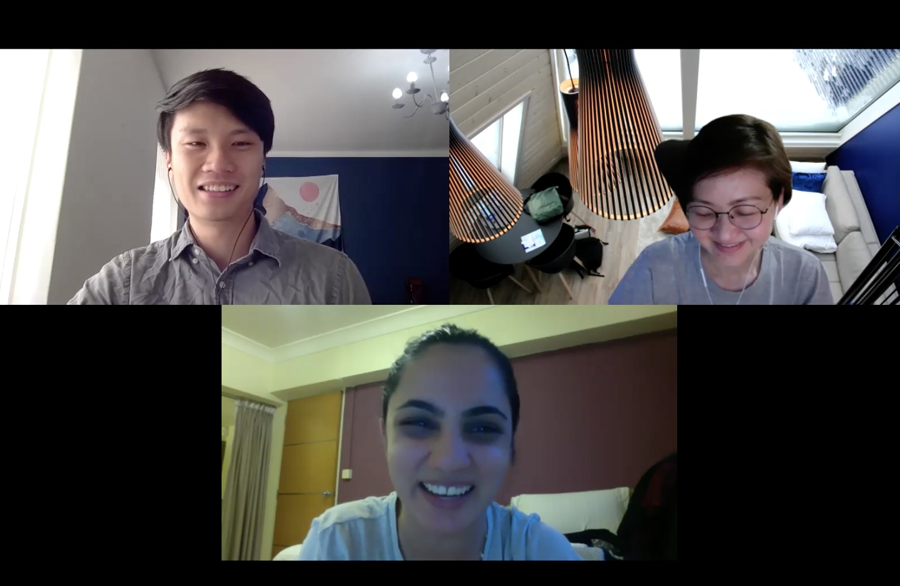
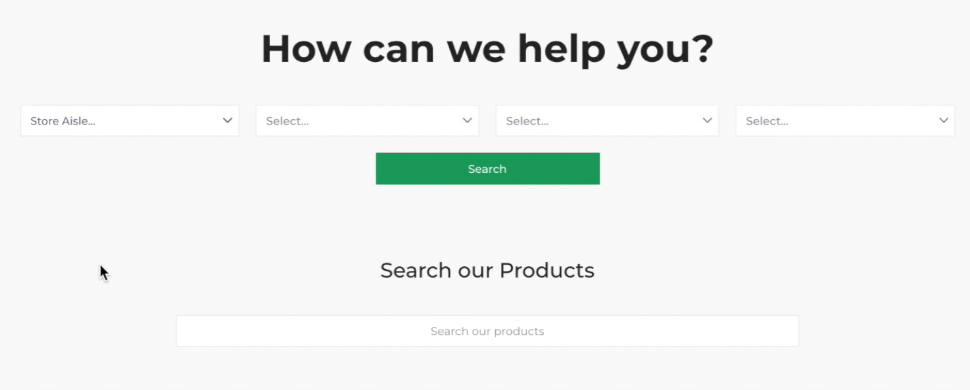

Everyday Vegan Grocer
Improving the usability and navigability of an online vegan grocery.
Role üë®ü誂Äçüíª
UX Researcher
Team üë•
Me + 2 UX Designers
Location üìç
Singapore
Duration üïí
1 month
(Sep'20)
Project üíª
Freelance
Skills üîß
User Research
Information Architecture
Background
Everyday Vegan Grocer is Singapore's first vegan grocery!
They sell a variety of animal-friendly and planet-conscious products, including fresh fruits and vegetables, meat alternatives, convenience foods and drinks.
The Problem
Everyday Vegan Grocer operated primarily through their online store, which is created using Shopify's e-commerce platform.
However, they have received some complaints about the usability of the website and the categorisation of their products.
The Goal
Improve the usability and information architecture of the Everyday Vegan Grocer website.
My Role
As the UX Researcher, I was in charge of conducting the user research and user evaluation. I was also actively involved in ideation, especially in coming up with the new and improved information architecture.
1. Empathise
Participants
We conducted our first round of research with 8 participants. 6 participants were prospective customers who were vegan-curious and passionate about sustainability and health. The other 2 particpants were current customers of Everyday Vegan Grocer.
Me (left) conducting a user research session with a participant (bottom) and observer (right) in Zoom.
User Interviews
Firstly, I conducted a user interview to understand the motivations, pain points and online shopping behaviour of prospective and current customers.
Open Card Sort
Secondly, I conducted a moderated open card sort to explore how the current information architecture could be improved.
During the activity, participants grouped 35 Everyday Vegan Grocer products and named the categories themselves.
I decided to conduct open card sort rather than a tree test because we would not have been able to reach useful quantitative conclusions with our limited number of participants. Instead, I decided to moderate the session and focus on extracting useful qualitative insights.
The open card sort was conducted using OptimalSort.
Usability Tests
Thirdly, I conducted a usability test to identify usability issues in the current online store.
Participants were tasked to use the Everyday Vegan Grocer website to purchase 5-10 items that they were interested in buying.
Participants were reminded to think aloud throughout the usability test, and were probed with follow-up questions after they completed the task.
I conducted the usability test after the open card sort to prevent the navigation structure on the current website (encountered during the usability test) from affecting participants' card sort responses.
2. Define
Personas
From the user interviews, we came up with two personas that captured the profiles, behaviours and goals of Everyday Vegan Grocer customers.

Affinity Mapping
The online store gathered an average satisaction score of 5.8 out of 10, suggesting a need to improve the website.
We conducted affinity mapping using Miro to identify the main themes underlying the usability and information architecture problems.
Afterward, we prioritised these issues based on their severity and frequency, on how easy they were to fix, and whether they hindered the main user flow.
Design Limitations
- Home Page:
- Important information was not displayed above the fold. Users had to scroll down to find the search bar or to view the shop categories and products.
- The "How can I help you?" section was disliked by users. Users found the dropdown menus confusing and multiple clicks were required to find a single product. 
- Users were unable to find products that were on sale or new arrivals. This was because these sections were not shown on the home page, but instead hidden under "Special Collections" in the navigation bar.


- Shop Pages:
- Subcategories were not used by users to help them find products. This was because the subcategories (e.g biscuits) were not made prominent on the page.
- It was difficult to navigate between the main categories. For example, to navigate from "Fresh Produce" to "Meat Alternatives", an extra click was required (i.e. Step 2).
- Lots of scrolling was required to browse products. This was because each product took up the entire width of the page.


Information Architecture Limitations
- There was an unbalanced distribution of subcategories. For example, "Meat Alternatives" had no subcategories while "Pantry" had 25 subcategories.
- There was an uneven distribution of products between subcategories. Some subcategories only had 1 item while others had over 40 items.
- Many subcategories were too specific or similar to one another. For instance, within "Dairy Alternatives", there were five different subcategories for cheese, and two different subcategories for yogurt. Within "Pantry", there was a subcategory for Cereals and another for Breakfast Cereals.

3. Ideate
Design Ideas
- Home Page:
- We decreased the size of the banner and placed the search bar above the fold.
- We removed the confusing "How can I help you?" section, and used this "prime real estate" to display shop categories instead to encourage users to start shopping.
- We made products that were "On Sale" and "New Arrivals" more prominent on the home page to make them more easily discoverable.

Our design ideas for the home page which were implemented into Everyday Vegan Grocer's website.
- Shop Pages:
- We displayed subcategories more prominently on the page and removed filters which were rarely used.
- We showed the main categories on every page to make it easier to navigate between categories.
- We fit more products in each row to make it more easy to browse products.

Our design ideas for the shop page that were presented in our Figma prototype.
Information Architecture Ideas
Based on the findings from the open card sort and an information architecture audit, we came up with a new and improved information architecture.

- Our new information architecture had a reasonable number of subcategories within each category and a suitable number of products within each subcategory.
- We created new subcategories (e.g. "Healthy Snacks") and regrouped specific products (e.g. "Tofu" is categorised under "Meat Alternatives" instead of "Fresh Produce").
4. Prototype
We designed a prototype in Figma to communicate our design recommendations.
Disclaimer: I contributed to the design and information architecture ideas, but the prototype was put together by another UX Designer in my team.
5. Test
Participants
We conducted our second round of user research with an existing customer of Everyday Vegan Grocer.
Unfortunately, we only recruited 1 participant due to time constraints and last-minute drop-outs.
Testing our Design
To evaluate our proposed design, I conducted a comparative usability test which compared our prototype with the existing Everyday Vegan Grocer website (before changes were made).
The participant preferred our prototype over the current website, because:
- Products & categories were displayed first on the home page, while less important information (recipes, blogs) was displayed later.
- It was easier to navigate between categories & subcategories.
- The interface was cleaner and less cluttered.
The comparative usability test was conducted using Zoom. The user was tasked to buy the same 5 products on our prototype and on the Everyday Vegan Grocer website. To reduce social desirability bias, we told the participant that the prototype was not designed by us.
Testing our Information Architecture
To test our new information architecture, we conducted a moderated tree test for our proposed categories & subcategories.
The quantitative findings were optimistic. The participant achieved a success rate of 100% and a directness score of 100% (went to the right category immediately without backtracking). They also took less than 5 seconds to find each item.
We also received positive qualitative feedback. The participant commented that the categories & subcategories were clear and the tree test was "easy!"
Although these findings provide some support to our ideas, we acknowledge that further research is required due to our limited sample size.

The tree test was conducted using Treejack. The user was tasked to find 10 Everyday Vegan Grocer products under our proposed information architecture.
Results
Outcome
Overall, our proposed design and information architecture received positive qualitative and quantitative feedback during the evaluation.
Additionally, the client was satisfied with our ideas and was particularly pleased with my contributions to the project. Within the same week of our project handover meeting, they implemented most of our design recommendations and updated their store to follow our proposed information architecture.
"Props to Jingxiu. I think he has fantastic communication skills and I can tell he put a lot of effort and thought into the project. Great presenter, and I can tell he drove a lot of the solutions. I particularly find the work on information architecture very well thought out given the limited time and interview material."
Kenny, Operations Manager at Everyday Vegan Grocer (Client)
In addition, I had a great experience working with the UX Designers in my team.
"Jingxiu has shown his strength on the research well, be it on his approach or methodology and is very accommodating and always ready to share with the team. He is organised, analytical, proactive and an excellent teammate to have."
Cindy Yeo, UX Designer (Team Member)
"Despite the hurdles that we faced, Jingxiu's technical analytic research skill and patient nature was pivotal for the success of the project. Jingxiu's personality and research skills will be a vital asset for any organization!"
Razie Rasid, UX Designer (Team Member)
Reflections
What went well üòÑ: In this project, I made sure that we came up with actionable solutions. Initially, I was planning to redesign the website completely and come up with a brand-new interface. However, after communicating with the client and taking the initative to understand their needs, I realised that they wanted solutions that were actionable in the short-term. Hence, I proposed simple design fixes and an improved information architecture, since these ideas are feasible and can be immediately implemented within Everyday Vegan Grocer's current e-commerce platform (Shopify).
What could be improved ü§î: During the project, we faced many unexpected challenges. For instance, we experienced technical problems during remote testing, and encountered participants who dropped out from our user research at the last minute. For future work, I plan to incorporate more preparation and contingency measures to ensure that the project progresses as smoothly as possible.